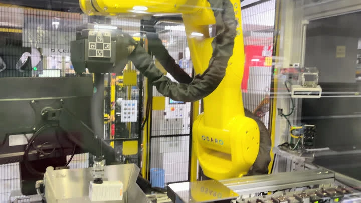
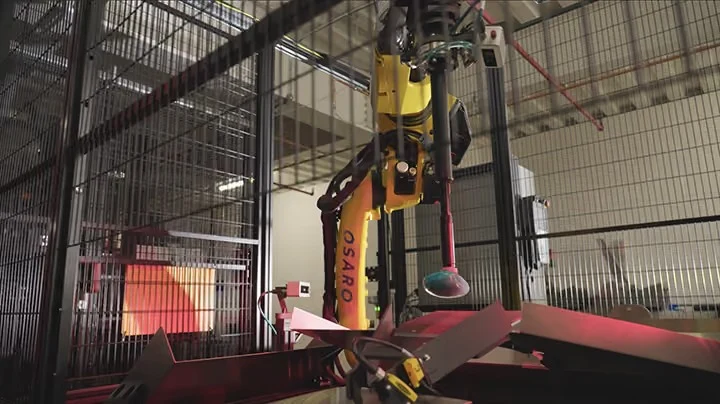
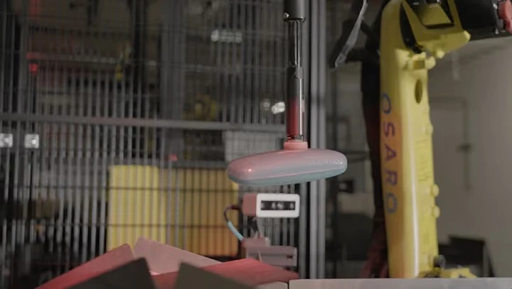
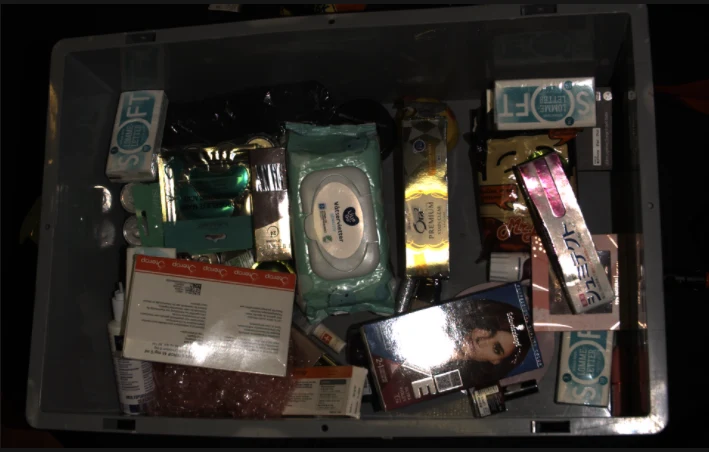
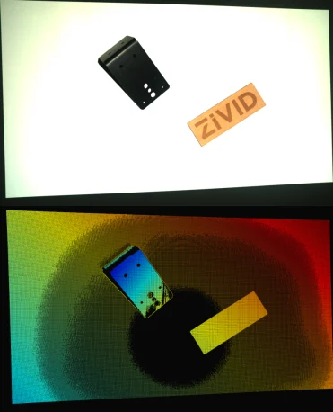
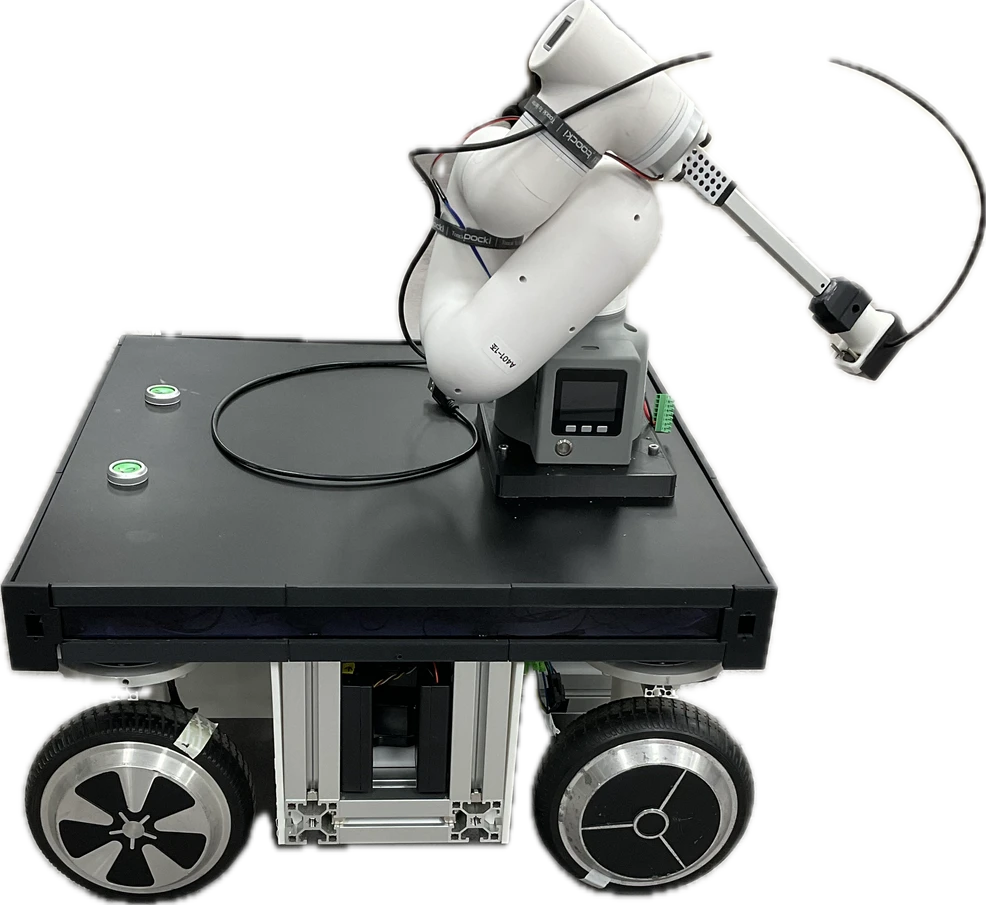
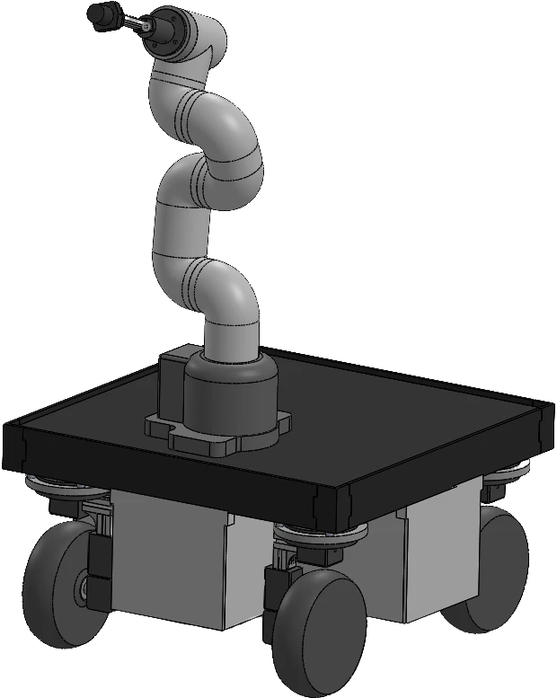
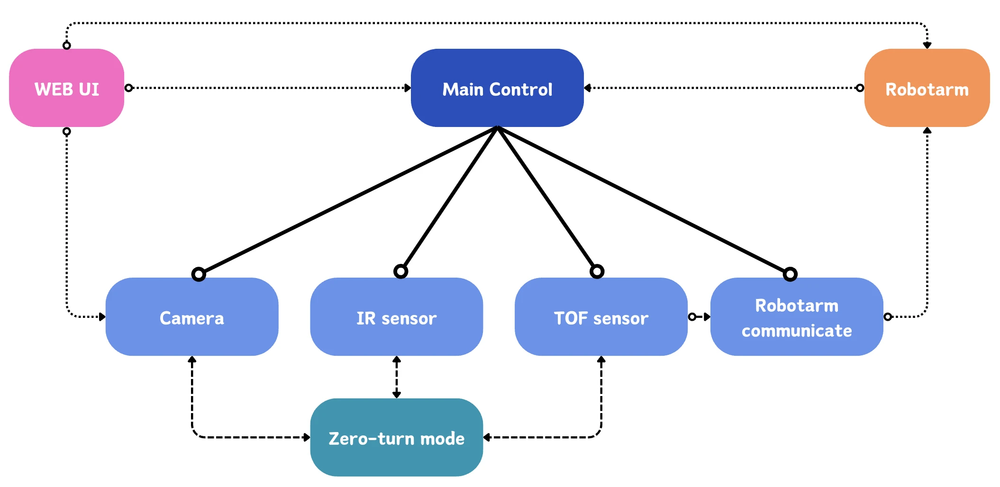

01 / Reject rate
8% 3%
Contributed through multi-pick analysis, model parameter tuning, and labeling tools.
Robotics engineer · Graduate research applicant
Daniel · 배한결
At OSARO, I investigate perception and grasping failures in deployed robots. I want to study robot policies that generalize across real-world conditions, and evaluation methods that reveal where those policies fail.
Scalable robot learning · Real-world evaluation
01 / Reject rate
Contributed through multi-pick analysis, model parameter tuning, and labeling tools.
02 / Autobagging throughput
Contributed through cycle profiling and sequence / parameter optimization.
03 / Analysis workflow
Built Python log-parsing and error-video retrieval tools.
01 / Professional experience
Diagnosing failures, building tools, and validating improvements with software and ML teams.
System Solutions EngineerApr 2026–Present
Solutions Support EngineerJun 2024–Mar 2026

OSARO robotic system in operation
18-second loop · 5× playback speed · Video supplied by Hangyul Bae · Download GIF


Selected field problem
A perception issue can become a system-level failure. I investigated robot stalls caused by invalid depth readings from reflective packaging.

Reflective packaging produced invalid depth readings.
The perception problem propagated into robot execution and stalls.
I investigated the cause and proposed a code fix.
Worked with software and ML teams to resolve the issue and validate fixes on deployed systems.
My contribution
Failure diagnosis, a proposed code fix, cross-team collaboration, and deployment validation. This experience motivates my interest in how robots recognize unreliable observations and choose appropriate recovery actions.
Reflections and bright spots can create incomplete or distorted 3D observations. This manufacturer example illustrates one sensing failure mechanism; it is not diagnostic data from the incident described above.

The lower panel has a missing-data region in a separate manufacturer demonstration of blooming.
Python tools for semi-automated log parsing, error-video retrieval, and labeling supported troubleshooting and model evaluation.
Analyzed multi-object picks and tuned picking-model parameters. Profiled autobagging cycles to improve operating sequences and throughput.
Developed exception modes, dimension-based rejection, light-gate debouncing, and retry logic for a successful small-polybag proof of concept.
02 / Selected robotics projects
Embedded motor control, sensing, and ROS integration across physical robot projects.

KG-KAIROS AI Robotics Academy · Dec 2023–Jun 2024
An EV-charging mobile manipulator combining a custom mobile base, sensor-guided operation, and a robot arm.
Team leader · Embedded & autonomous-driving teams
I implemented mobile-base motor control, line following, and operating modes; designed a ROS publisher–subscriber architecture integrating camera, IR, and ToF sensing with the robot arm.
System overview · My implementation highlighted
Simplified functional overview. Robot-arm and deep-learning components were developed by teammates.

Motor control: Four BLDC and four servo motors, using PWM, UART interrupts, Hall-sensor feedback, and proportional speed control for mobile-base maneuvers.
Operating sequence: Camera → IR → zero-turn → ToF → robot-arm mode. The architecture coordinates separate operating modes.

Smart Factory Capstone · Sep–Dec 2023
Independently coordinated with an industry partner. Implemented remote robot-arm and I/O control in Linux, and logged real-time robot coordinates to CSV.
PYTHON / MQTT / LINUX / URSIM
Autonomous Driving Capstone · Sep–Dec 2023
Reconfigured a toy vehicle for Arduino Mega control. Implemented C/C++ motor control and camera-based line following.
C/C++ / ARDUINO MEGA / VISION
03 / Research interests
Reflective packaging taught me how a small perception failure can interrupt an entire robot cycle. That experience motivates my interest in robust robot policies and meaningful real-world evaluation.
How can real-world failure cases become reproducible evaluations of generalist robot policies?
How can robot learning address perception uncertainty and grasping errors under changing deployment conditions?
How can policies transfer to new objects, tasks, and setups without extensive task-specific data collection?
Research connection · SRL
SRL’s work on generalist policy evaluation and data-efficient VLA adaptation connects to questions I hope to explore. My starting point is practical experience with failure analysis, engineering tools, and validating changes on deployed robots.
04 / Background
B.S. in Electrical and Electronic Engineering
Coursework in Electronics and Convergence Engineering
Python · C/C++ · Rust
ROS · STM32 · Arduino · Raspberry Pi · Motor control · Sensors · UART · MQTT
Linux · URSim
Samsung SDS C++ Algorithms Program, 2023